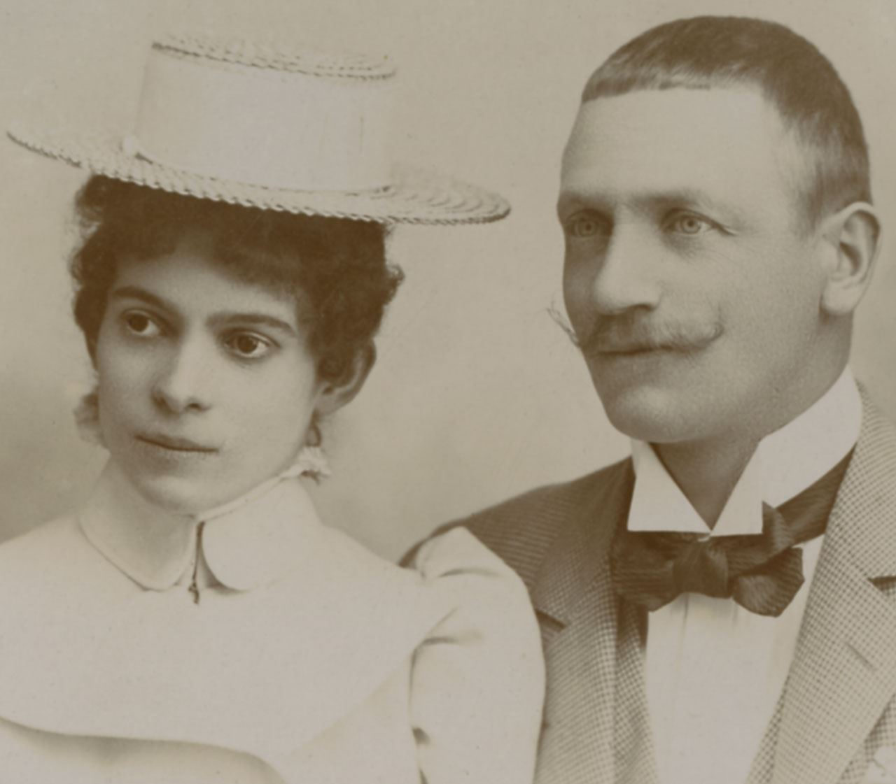

Aqui serão colocadas algumas imagens da marca e
e alguns produtos famosos da mesma.
Esse é o Castelo Faber Castell, que fica localizado na Alemanha.
A fachada com arcos e pilares romantizados, elementos de estrutura
de madeira, torres redondas e de canto, lembram um castelo medieval.
No entanto, os interiores são diferentes. De maneira impressionante e
versátil, os estilos mudam das épocas românica, gótica e renascentista,
passando pelo Império e Classicismo para o que era então ultra-moderno - o
Art Nouveau.
Aqui Podemos ver o logo da Faber Castell
Em 1898, a filha mais velha do Barão Wilhelm von Faber, Ottilie (1877-1944),
casou-se com o Conde Alexander zu Castell-Rüdenhausen, membro de uma das famílias
aristocráticas mais antigas da Alemanha. Mas o testamento de seu avô Lothar von Faber
havia estipulado que qualquer um de seus descendentes que fosse bem-sucedido em sua
propriedade deveria continuar não apenas com o nome da empresa, mas também com o
nome de família Faber. E assim, por consentimento do Príncipe Regente Luitpold, surgiu a
nova linha de Condes von Faber-Castell.
Após a morte da viúva de Lothar Ottilie em 1903, o negócio passou para sua neta Ottilie
e seu marido Alexander. No mesmo ano, o Conde Alexandre mandou construir um "castelo
de considerável extensão" no terreno próximo ao local de produção em Stein, adjacente ao
Castelo Velho menor que havia sido construído por Lothar von Faber. O Novo Castelo estava
pronto para ser ocupado em 1906.